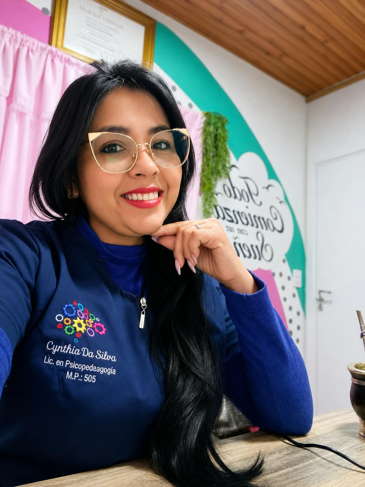

Evaluación psicopedagógica
Comprender las fortalezas y necesidades de cada proceso de aprendizaje.
Conocer más →Un espacio pensado para acompañar, comprender y potenciar los procesos de aprendizaje de niños, adolescentes y sus familias.

Cada persona aprende de una manera diferente. Mi objetivo es brindar herramientas y estrategias que respeten los tiempos y las necesidades individuales.
Comprender las fortalezas y necesidades de cada proceso de aprendizaje.
Conocer más →Un espacio personalizado para fortalecer habilidades y aprendizajes.
Conocer más →Acompañar a las familias con herramientas y estrategias.
Conocer más →Si querés conocer más sobre mi trabajo, podés comunicarte conmigo.
Hablemos →